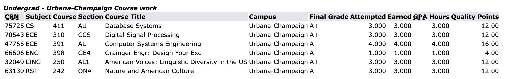
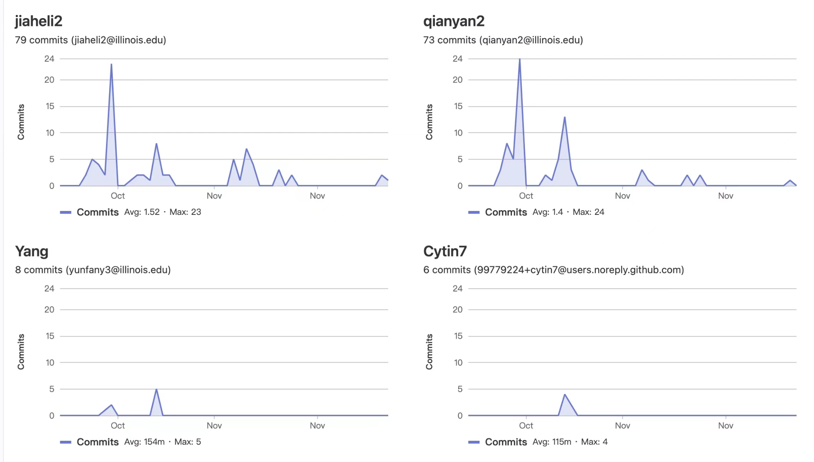
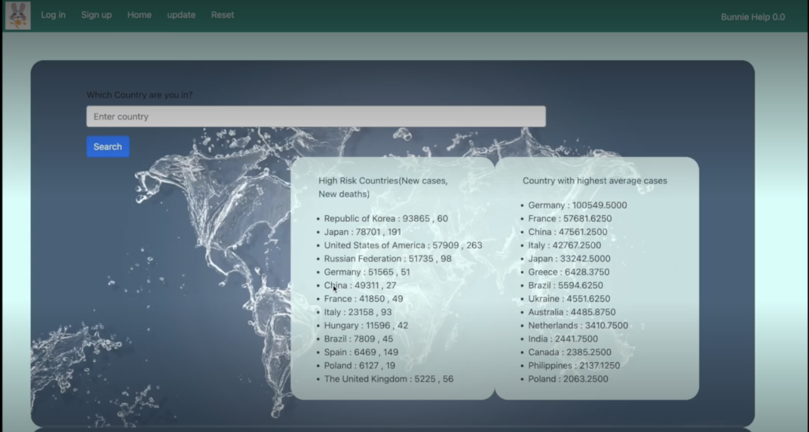

Junior Student in Computer Engineering
Zhejiang University - University of Illinois at Urbana-Champaign Institute
Hosted on GitHub Pages — Theme by orderedlist
Cumulative GPA (20FA-22FA): 3.94 Ranking: 1/64
Total Units Taken: 118
22FA at UIUC:

ECE391 - Computer Systems Engineering - 22FA(at UIUC) - A
CS411 - Database Systems 22FA(at UIUC) - A+
CS225 - Data Structures - 22SP - A
ECE220 - Computer Systems & Programming - 21FA - A
MATH286 - Intro to Differential Eq Plus - 22SP - A
CS 374 - Intro to Algs & Models of Comp - 23SP
CS 440 - Artificial Intelligence - 23SP
Based on the foundation provided by the course, we designed a Linux-like operating system, implementing virtual memory (paging and segmentation), file system, interrupt handlers, system call handlers, exception handlers, multi-terminal, scheduler, etc.
I participated in all the subtasks of this project and completed about 70% of the code. I have a decent understanding of the main functions like paging, system calls, interrupt, etc. of a Linux-like OS. My final score in this project is 100 and our OS can successfully implement the required functionality.

Our system is an integrated medical system for medical treatment(such as sheep placenta injection) that enables registration, queuing, scheduling of treatment, report printing and more. In this system, users have a high degree of freedom over whether or not to receive treatment, and will be scheduled fairly and efficiently.
The main functions of the system include registration, sorting with priority, automatic generation of a specified number of lists at the top of the sort, custom priority, queue insertion, and periodic printing of reports (daily, monthly, annual, etc).
I participated in the conception of the whole project, such as the simulation of the date change, priority setting and other special features. I had good cooperation with three other teammates, of which I did about 40% of the code. In particular, I played a major role in the debug session.
The Coronavirus disease 2019 (COVID-19) is a contagious respiratory illness that can be passed from person to person. Although attitudes and responses vary by country, we cannot deny that this virus will be with us for a long time. Furthermore, news and discussions on social media influence our personal perspectives on COVID-19. Large and detailed professional data is presented among the existing well-known databases, such as WHO. However, we do not always care about information that is too far removed from our lives. We want a comprehensive tool that includes not only basic COVID-19 data, but also news, fake news, and social media discussions. We would also like to see predictions about the future development of the epidemic in a specific location in order to make travel plans.
In this project, we not only used the database content we learned in class, such as SQL, mongodb, etc., but also learned certain front-end and back-end techniques.
